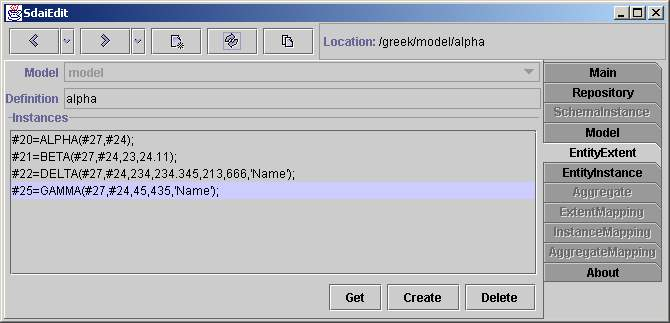

Entity Extent page

Here is shown data related to one entity data type (entity definition). Data
can be merged from several models (in the case that you are working on schema
instance instead of model). At the top are list of models in the combo box
and entity data type name (entity definition name). Current model in combo
box will change automatically to instance model when you select instance.
In the list below are all instance of showing type which are in these models.
If you want to create instance of this type you need to select model in which
you will create it and press 'Create' button. If you want to delete instance
you need to select one and press 'Delete' button. 'Get' button is for further
editing operations. If you select instance and press 'Get' than selected
instancewill be placed in sdai clipboard and you will be able to use set
operationlater. More for editing see entity
instance.